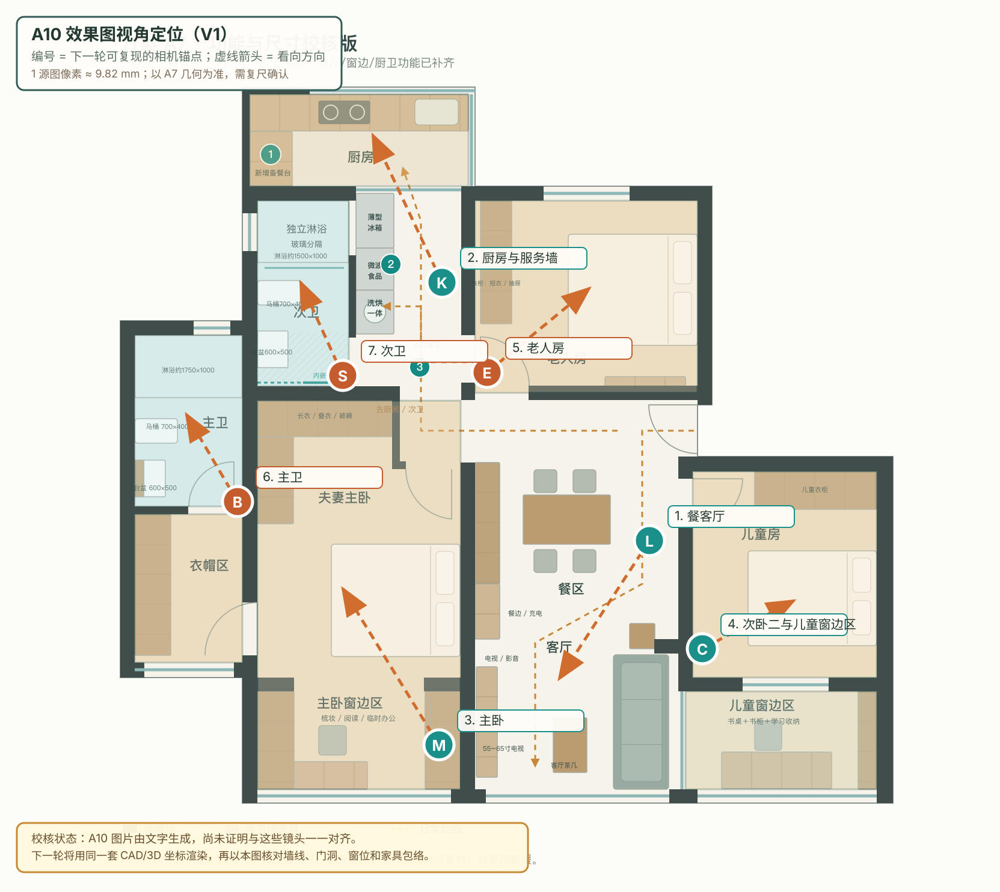

方案 A10 · 效果图视角与尺寸校核
把“风格效果图”和“真实空间依据”拆开核对，作为下一轮同模渲染的基准。 查看 A10 效果图页
先说结论：A10 当前 7 张图由 gpt-image-2 文字生成，能表达风格和家具内容，但没有从可验证的 CAD/3D 相机直接渲染，因此本页的编号和箭头是下一轮的相机锚点，不能反向证明 A10 已经按真实透视制作。尺寸以 A7 几何与下表的设计目标为准，现场复尺和具体产品 SKU 确认后才能进入施工图。
1. 平面图上的相机位置

公共区/卧室镜头卫浴镜头虚线箭头：相机看向点坐标单位：原始 PNG 像素
2. 效果图与镜头锚点
| 编号 | 效果图 | 相机位置 (x, y) | 看向点 (x, y) | 视角说明 | 应看到的内容 | 状态 |
|---|---|---|---|---|---|---|
| 1 · L | 餐客厅living.png | (1080, 900) | (930, 1130) | 从入户/餐区看向客厅南窗与沙发 | 餐桌、沙发、电视柜、茶几、餐边柜 | 待同模渲染 |
| 2 · K | 厨房与服务墙kitchen.png | (735, 470) | (620, 225) | 从走廊服务墙回看厨房操作台 | 橱柜、薄型冰箱、微波/蒸箱、洗烘一体机 | 待同模渲染 |
| 3 · M | 主卧master.png | (730, 1240) | (570, 980) | 从主卧窗边回看床与衣柜 | 双人床、北侧/西侧衣柜、窗边弹性台 | 待同模渲染 |
| 4 · C | 次卧二与儿童窗边区child.png | (1168, 1080) | (1320, 1000) | 从窗边学习区回看床与衣柜 | 床、床头柜、衣柜、1800×600 学习桌、书柜 | 待同模渲染 |
| 5 · E | 老人房elder.png | (810, 620) | (980, 480) | 从门侧看向床与整墙衣柜 | 床、床头柜、整墙衣柜、通行净空 | 待同模渲染 |
| 6 · B | 主卫main_bath.png | (395, 835) | (310, 690) | 从门侧看向淋浴、马桶、台盆 | 淋浴、马桶、台盆、镜柜、干湿分区 | 待同模渲染 |
| 7 · S | 次卫secondary_bath.png | (570, 625) | (500, 470) | 从过道侧看向淋浴与洁具 | 内嵌推拉门、淋浴、马桶、台盆、过道净空 | 待同模渲染 |
相机位置和看向点是平面坐标锚点；下一轮会把它们转换成 CAD/Blender 的米制坐标、相机高度、镜头焦距和裁切范围，并以同一坐标系出图。
3. 真实比例与尺寸基准
| 对象 | A7 图上依据 | 换算/设计尺寸 | 使用说明 |
|---|---|---|---|
| 图纸标尺 | 1 源图像素 | ≈ 9.82 mm | A7 几何校准：3320 mm / 338 px；现场复尺后更新 |
| 厨房包络 | 364 × 153 px | ≈ 3574 × 1503 mm | 厨房区包络；橱柜深度目标 600 mm |
| 次卫包络 | 152 × 309 px | ≈ 1493 × 3034 mm | A7 次卫区包络，最终以墙线和洁具定位复核 |
| 主卫包络 | 179 × 285 px | ≈ 1758 × 2799 mm | 含淋浴、马桶、台盆的布置包络 |
| 主卧包络 | 338 × 647 px | ≈ 3320 × 6352 mm | 衣柜、床和窗边弹性台按此坐标布置 |
| 次卧一包络 | 370 × 320 px | ≈ 3633 × 3142 mm | 老人房；衣柜深度目标 600 mm |
| 次卧二包络 | 306 × 343 px | ≈ 3005 × 3369 mm | 儿童房；床柜留出开门与通行区 |
| 儿童窗边区 | 318 × 163 px | ≈ 3123 × 1602 mm | 1800 × 600 mm 学习桌 + 约 300 mm 深书柜 |
| 餐桌 | 约 145 × 82 px | 约 1400 × 800 × 750 mm | 4 人日常，端部可加椅 |
| 沙发 | 约 92 × 224 px | 约 2200 × 900 × 830 mm | 效果图中应保持家具包络，不以透视比例量尺寸 |
| 主卧窗边台 | 约 122 × 46 px | 1200 × 450 × 750 mm | 梳妆/阅读弹性台；镜面为预留项 |
| 冰箱 | 约 63 × 91 px | 设计目标 ≤ 650 W × 600 D × 1900 H mm | 薄型型号；下单前按具体 SKU 外廓替换 |
| 微波/蒸箱高柜 | 约 600 mm 柜宽 | 柜深约 600 mm；设备位按 SKU | 与冰箱、洗烘柜组成走廊服务墙 |
| 洗烘一体柜 | 约 600 mm 柜宽 | 设备约 600 W × 600 D × 850 H mm | 可按叠放方案预留 2.0 m 高柜体 |
| 主卫浴缸 | A7 设计目标 | 1500 × 700 mm | 需确认墙边检修和开启净空 |
| 主/次卫淋浴 | A7 设计目标 | 主卫约 1750 × 1000；次卫约 1500 × 1000 mm | 以玻璃隔断和门扇开启校核 |
| 台盆/坐便器 | 设备外廓目标 | 台盆约 600 × 500；坐便器约 700 × 400 mm | 具体品牌 SKU 后更新安装尺寸 |
4. 后续执行规则
- 先在 FreeCAD 的 BIM/Sketcher 中建立墙体、门洞、窗位、家具包络和设备外廓的参数化模型，全部以 mm 记录。
- 从同一模型导出功能平面、尺寸平面、立面和 Blender 渲染场景；相机编号沿用本页 L/K/M/C/E/B/S。
- 每张效果图同时交付本页视角编号、相机坐标、目标点、相机高度、焦距和画面裁切；家具尺寸从模型读取，不靠图片目测。
- 你确认布局、家具、材质和家电 SKU 后，再冻结施工图版本，避免先画完整施工节点后返工。
源平面：A7 功能平面；源文件：scheme_a_geometry.json。比例说明为图纸校准值，不是现场测量结果。